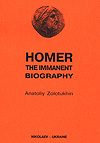
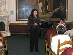

В издательстве Ирины Гудым выпущен буклет «Дикий Сад» - археологический памятник XIII-IX вв. до н.э. – ровесник Трои», составитель Золотухин А.И. В буклете приведены: заключение об археологическом памятнике «Дикий Сад» В.И. Клочко, доктора исторических наук, профессора, зам. директора НИИ охраны памятников, чл-кор. Немецкого археологичес-кого иститута; Историческая справка «Городище «Дикий Сад» Ю.С. Гребенникова и К.В. Горбенко; Историческая справка «Киммерийцы» А.И. Золотухина, а также фото раскопок и план границ памятника и цитадели, фото архитектурных объектов и реконструкция помещений, керамической посуды, изделий из бронзы, кости и камня.  См. отзыв на книгу Почетного члена Пушкинского клуба, главного редактора газеты «Вечерний Николаев» В.Ю. Пучкова – «Николаев – за тысячу лет до Христа», газ. «Вечерний Николаев», 11 октября 2007 г. 23 сентября 2007 г. состоялось отчетно-выборное собрание Пушкинского клуба, на котором была принята программа работы клуба на сезон 2007-2008 гг. Новый сезон работы клуба был открыт проведением вечера, посвященного 190-летию окончания Пушкиным лицея – ведущая Фарберова Е.М. На вечере выступили также лицеисты города Николаева, Л.И. Одегова рассказала о художественной выставке, музыкальное оформление вечера – О.Н. Петренко. По приглашению директора Николаевской Астрономической обсерватории Геннадия Ивановича Пинигина с 9 по 14 сентября 2007 г. в Николаеве находились потомки первого директора Николаевской астрономической обсерватории Карла Кнорре (1801-1883) Сюзанна Эрал, её муж Альберт Деспре и брат Серж Пратт. Визиту и знакомству с Николаевской землей уважаемых гостей содействовали президент Николаевской ассоциации «Альянс Франсез» Татьяны Сергеевны Каировой и председатель Пушкинского клуба А.И. Золотухин. 


В издательстве Ирины Гудым вышла книга на французском языке (компьютерный макет разработан Золотухиным А.И.) G.M. Petrov, G.I. Pinigin «KARL KNORRE, PREMIER ASTRONOME DE LA FLOTTE DE MER NOIRE». Книга является переводом ранее выпущенной книги Г.М. Петрова и Г.И. Пинигина «Карл Кнорре – первый астроном Черноморского флота». Перевод выполнен прямым потомком К. Кнорре, Сюзаной Эрал. Книга дополнена С. Эрал разделом, посвященным истории семьи Карла Кнорре (1801-1883) и его потомков, в числе которых отмечен её брат – Серж Пратт.  27 мая 2007 г. в Пушкинском клубе состоялась презентация книги А.И. Золотухина «Николаевский Пушкинский клуб (1989-2007 гг.)», Николаев, Издательство Ирины Гудым, 2007.- 544 с., 200 ил. Книга посвящена истории первых 18 лет работы городской общественной организации Николаевский Пушкинский клуб. В ней представлены: хронология событий, относящихся к теме «Пушкин и Николаевский край», страницы рукописей и тексты, созданные поэтом в Николаеве и имеющие отношение к городу, исторические справки и документы по увековечению памяти А.С. Пушкина, В.И. Даля и Г.Н. Ге в Николаеве, летопись деятельности и альманах Пушкинского клуба.  12 мая 2007 г. в Доме культуры строителей состоялась премьера пьесы «Сковорода», написанной и поставленной Почетным членом Пушкинского клуба, Заслуженным артистом Грузии, Почетным гражданином г. Николаева, Николаем Алексеевичем Трояновым. Пьеса сыграна артистами Народного драматического театра, руководителем которого является Н. Троянов вот уже 44 года. Постановка пьесы осуществлена благодаря финансовой поддержке зам. Главы Николаевской облгосадминистрации С.Н. Карцева. В издательстве Ирины Гудым вышла книга Почетного члена Пушкинского клуба, проф., Тамары Константиновны Пересунько «Зощенко и Николаев (Из эпистолярного наследия писателя)», Николаев, 2007, 120 с., 30 ил., тир. 100 экз. Компьютерный макет изотовлен А.Золотухиным. Здесь впервые рассмотрены: участие М.М. Зощенко в издании книги «Беломорско-Балтийский канал имени Сталина»; переписка писателя с любимой женщиной во время её пребывания в Николаеве; письмо николаевца А.И. Пульсона писателю, а также общественно-политическая драма Зощенко в письмах и документах.  В издательстве «Возможности Киммерии» в конце 2006 г. вышла книга на английском языке «HOMER. THE IMMANENT BIOGRAPHY» by Anatoliy Zolotukhin (Золотухин А.И. «Гомер. Имманентная биография»), 116 стр. Книга представляет собой перевод книги автора, изданной в 2001 г. с тем же названием «Гомер. Имманентная биография». 
К 170-летию гибели Пушкина! В ПУШКИНСКОМ КЛУБЕ |
|
Минуло 170 лет с той минуты, когда наш земляк В.И. Даль отпустил душу Александра Сергеевича Пушкина на волю. Действительно, бывают странные сближения, как говаривал поэт. Даль ведь жил в Оренбурге, но какое-то странное провидение привело его в Петербург. И он, едва узнав, что Пушкин был ранен на дуэли, как врач и друг, пришел к нему, провел неотступно с ним сутки, пытаясь облегчить его страдания, и «побратался с ним уже не для здешнего мира». И совсем уже странным выглядит то, что Пушкин бывая в Николаеве более 7 раз с 1820 по 1824 гг., останавливаясь в доме у А.П. Зонтаг (ныне ул. Гражданская, 6), общаясь с его друзьями, К.Х. Кнорре, Е.П. Зайцевским и братом Карлом так и не встретился с Владимиром Далем, который жил в то время от него всего в нескольких кварталах (ныне ул. Потемкинская, 115). Видимо было не суждено. Познакомились они уже в Петербурге в 1832 г., когда у Даля вышел первый пяток сказок. За это Пушкин подарил ему свою «Сказку о рыбаке и рыбке» с надписью: «Твоя от твоих! Сказочнику Казаку Луганскому – сказочник Александр Пушкин». А мог бы подарить и «Сказку о царе Салтане», которая вышла тоже в 1832 г. Как недавно выяснено мною, она была посвящена описанию тайного приезда поэта в Николаев на яхте (имела вооружение брига – это ответ на замечание Почетного члена Пушкинского клуба, Ю.С. Крючкова) «Утеха» в начале октября 1823 г., которой командовал Е.В. Зонтаг. А, вот, если бы они познакомились в Николаеве, то уж точно Пушкин подарил бы именно эту сказку. Но если бы, да кабы, – не считается… Вот уже 18-й год в нашем городе работает Пушкинский клуб. В состав совета клуба входят: директор Художественного музея им. В.В. Верещагина С.Н. Росляков, зав. кафедрой Гуманитарного университета им. П. Могилы Т.С. Каирова – заместители председателя клуба, Т. Г. Москаленко – секретарь клуба, а также члены совета С.В. Бойчук, Н.Ш. Громова, В.А. Долженко, Л.Е. Коваленко, Л.И. Одегова, О.Н. Петренко, С.А. Семенова, А.В. Стоева, Е.М. Фарберова. В контрольно-ревизионную комиссию входят: Ю.А. Борзов (председатель), О.С. Дудникова, В.В. Шарапа. Каждое 4-е (не всегда последнее!) воскресение месяца, начиная с сентября по май месяц, члены клуба собираются в музыкальной гостиной Художественного музея им. В.В. Верещагина (спасибо управлению культуры Облгосадминистрации!) на литературно-музыкальные вечера. За это время проведено более 180 таких вечеров. Во время каникул, 13-17 июля 2006 г ., Пушкинский клуб принимал участие во встрече культурной делегации г. Москвы, которая прибыла в наш город по приглашению городского головы В.Д. Чайки. делегация деятелей культуры Правительства Москвы в следующем составе: Москвина Виктора Александровича , - основателя, вместе с А.И. Солженицыным и Н.А. Струве, фундаментального и научно-исследовательского культурного центра «Русское зарубежье», директора издательства «Русский путь», чьи книги были переданы в дар нашему городу; Кублановского Юрия Михайловича , - выдающегося русского поэта, члена редколлегии журнала «Вестник русского христианского движения», издаваемого Н.А. Струве, лауреата премии им. А.С. Пушкина и Александра Солженицына, с 1995 г. заведует отделом поэзии журнала «Новый мир». Известен тем, что не побоялся открыто поддержать А.И. Солженицына, за что был выслан в 1982 г., жил в Париже и Мюнхене. Составителем его стихов был Иосиф Бродский. Вернулся на родину в 1991 г.; Никитина Валентина Арсеньевича , - одного из ведущих богословов и писателей России, академика РАЕН, члена редколлегии журнала «Вестник русского христианского движения», издаваемого Н.А. Струве, гл. редактора журнала «Путь Православия» и православного радио «Логос». Награжден Московским Патриархом двумя медалями преп. Сергия Радонежского в 1978 и 2000 гг., а также орденом св. благоверного князя Даниила Московского в 2002 г. Лауреат РАЕН (серебрянная медаль) в 2003 г.; Бузника Михаила Христофоровича , - нашего земляка, одного из ведущих поэтов России, драматурга и писателя, его книги переведены на французский, английский и китайские языки. Основные поэтические сборники вышли в издательстве YMCA - PRESS в Париже у Н.А. Струве. Лауреата премий им. Артюра Рембо (Франция) и Конгресса США. Сезон работы Пушкинского клуба по традиции открылся отчетно-выборным собранием 24 сентября 2006 г., на котором Ю.М. Кублановский был принят в Почетные члены клуба. После чего состоялся вечер, посвященный 195-летию Пушкинского лицея с участием учеников нашего Морского лицея им. Михаила Александрова (ведущая Е.М. Фарберова). В сентябре Пушкинский клуб направил письмо в Оргкомитет с представлением на присуждение Областной премии им. Н.Н. Аркаса 22 октября состоялся вечер, посвященный памяти поэта, Почетного члена Пушкинского клуба, Эмиля Январева (ведущие В. Качурин и Автор), в котором приняли участие супруга поэта Л.П. Костюк, поэты Дмитро Креминь, Аркадий Суров, писатель Анатолий Маляров. 9 ноября т.г. состоялась внеплановая встреча членов Пушкинского клуба с научным сотрудником Пушкиногорья Вячеславом Козминым. Козмин приехал в Николаев к своей матери. Члены клуба подарили Вячеславу свои книги, а он вручил свои. Вспомнили С. Гейченко, хранителя Пушкиногорья. Состоялся обмен информацией о судьбе Михайловского, Тригорского, об издании Пушкинских трудов, об экскурсиях, пушкинском дубе у лукоморья, о мельнице, у которой состоялась дуэль Онегина и Ленского. В заключение встречи гостю были вручены цветы и в исполнении О. Петренко на фортепиано прозвучал романс Г.Свиридова из фильма, поставленного по повести Пушкина "Метель". 26 ноября Пушкинский клуб отметил 150-летие со дня рождения гения украинской культуры Ивана Франка, ведущие Дмитро Креминь, Светлана Бойчук и Нелля Громова. 16 декабря члены Пушкинского клуба приняли участие в вечере, посвященному 85-летию Почетного члена Пушкинского клуба, Заслуженного артиста Грузии (до сих пор не понятно, почему еще и не Украины?!), Николая Алексеевича Троянова. Торжества прошли в Доме культуры строителей, на них маэстро в исполнении своего Народного драматического театра (который он возглавляет 44 года!) показал две сцены из авторских пьес «Триумф старого дома» и «Сковорода». Пользуясь случаем, выражаю благодарность от имени членов Пушкинского клуба руководителям области, А.В. Садыкову и С.Н. Карцеву, за конкретную поддержку постановки пьесы Н.А.Троянова «Сковорода». 2006 год в Художественном музее прошел под девизом 100-летия выдающегося художника, нашего земляка, Евгения Кибрика. 24 декабря состоялся вечер, посвященный этому событию. Вечер провела сотрудник музея и член совета клуба Лидия Одегова при участии Нелли Громовой. Новый 2007 год открылся заседанием клуба, посвященному личному творчеству членов клуба – вечер провела секретарь Пушкинского клуба, Тамара Георгиевна Москаленко. На вечере члены клуба читали свои стихи, рассказы, исполняли свои песни. Нелишне будет отметить, что членами клуба публикуется довольно много статей на различные темы в наших газетах, издаются книги. Итог работы клуба за 17 лет подведен в моей книге «Николаевский Пушкинский клуб», которая готовится к изданию. В планах клуба до конца сезона предполагается: 25 февраля 2007 г. провести вечер, посвященный 170-летию гибели А.С. Пушкина; с участием союза писателей 25 марта планируется отметить Всемирный день поэзии; 22 апреля – вечер «Православие как основа нашей культуры»; 27 мая предполагается провести презентацию книги «Николаевский Пушкинский клуб», это в том случае, если Облгосадминистрация поддержит ее издание. С программой работы и деятельностью Пушкинского клуба можно ознакомиться на сайте фирмы «Фарлеп» ( http :// www . cnw . mk . ua / pushkin / index . htm ), работу которого поддерживают члены клуба, отец и сын, Игорь и Алексей Горбатенко, за что им и руководству фирмы выражаем благодарность! По установившейся традиции сезон закрывается проведением встречи членов клуба у мемориальных досок и памятника поэту в Николаеве на день рождения А.С. Пушкина 6 июня. К сожалению, в марте прошлого года неизвестными лицами была снята мемориальная доска, установленная на доме А.П. Зонтаг к 200-летию со дня рождения Пушкина. Письмами от имени Пушкинского клуба в прошлом году я обращался к городским и областным властям с просьбой восстановить эту доску, но эта просьба до сих пор остается не выполненной. Пушкин давно уже стал неотъемлемой частью мировой культуры. Те, кто этого не понимают, не могут считаться культурными людьми. А. Золотухин. Опубликована с сокращениями в газете «Вечерний Николаев» 10 февраля 2007 г. Архив новостей: |
   |